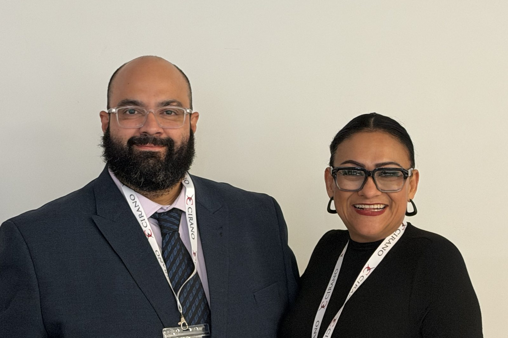
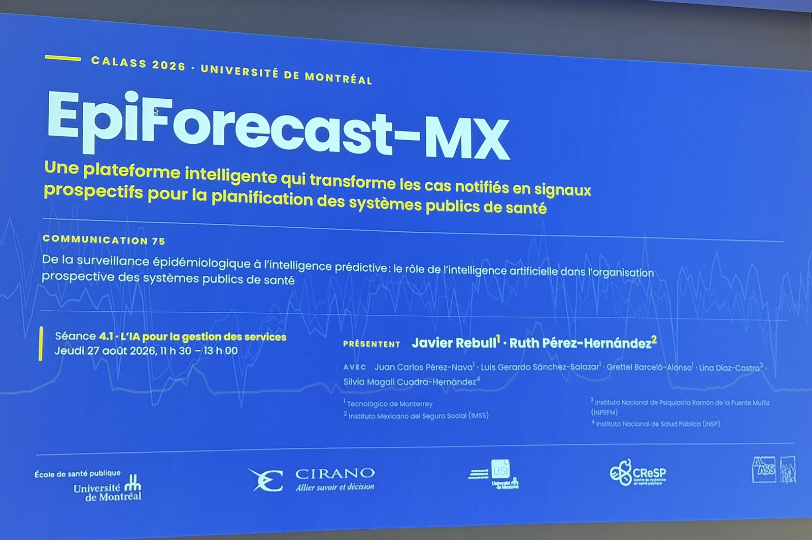
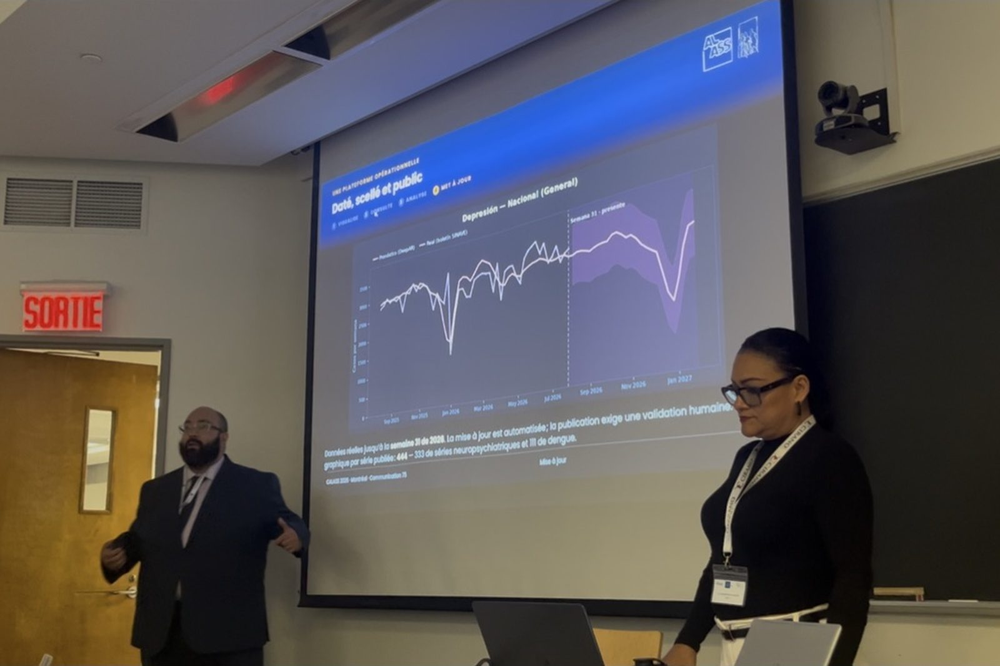
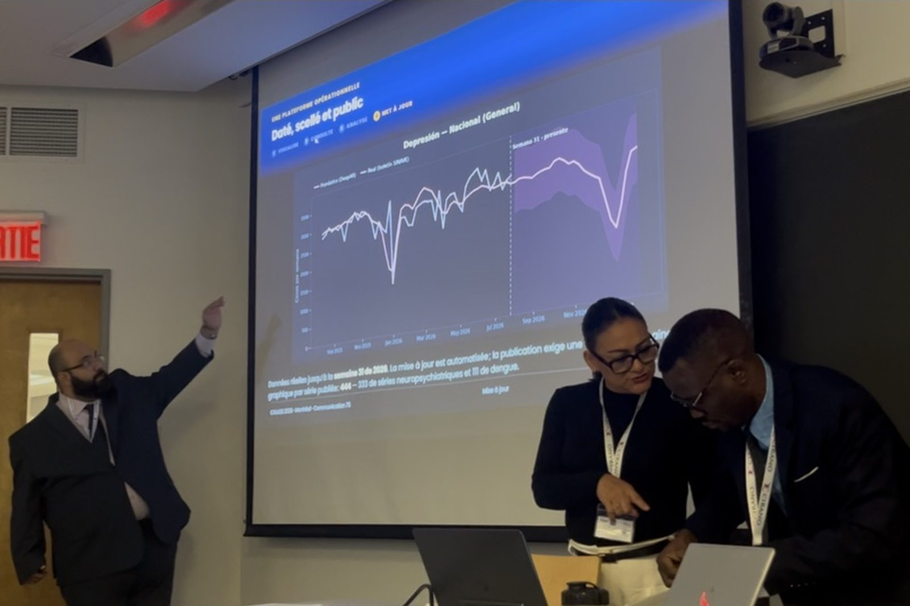
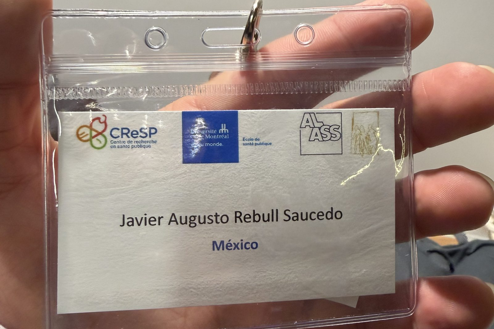

El jueves 27 de agosto de 2026, EpiForecast-MX expuso en el XXXVI Congreso de la ALASS, la Association Latine pour l’Analyse des Systèmes de Santé, celebrado en la Université de Montréal. La Dra. Ruth Pérez-Hernández (IMSS) y Javier Rebull (Tecnológico de Monterrey) presentaron la Comunicación 75 en la sesión 4.1 · «L’IA pour la gestion des services»: una plataforma pública que convierte casos notificados en señales prospectivas para la planificación de los sistemas de salud.

El CALASS es el congreso anual de la ALASS, la Association Latine pour l’Analyse des Systèmes de Santé: una red que desde hace más de tres décadas reúne a investigadores, gestores y profesionales de los sistemas de salud del mundo latino, con varias lenguas de trabajo. Su XXXVI edición se celebró del 27 al 29 de agosto de 2026 en Montréal, con la École de santé publique de l’Université de Montréal (ESPUM) como anfitriona y el Centre de recherche en santé publique (CReSP) y CIRANO entre las instituciones que lo acompañaron.
El tema de esta edición fue «Prévention en santé et efficience dans l’organisation des soins : défis et innovation dans les systèmes de santé» —prevención en salud y eficiencia en la organización de la atención: desafíos e innovación en los sistemas de salud—, que es exactamente la conversación en la que este proyecto quiere estar: no la de producir más información, sino la de obtener más valor de la que ya existe.
Importa porque el CALASS no es un foro de modelos, sino de sistemas de salud. La pregunta que se hace en esa sala no es qué tan bien ajusta un algoritmo, sino qué cambia en la organización de los servicios cuando el dato llega antes. Llevar ahí una plataforma que ya está publicada y abierta —y no un prototipo— es lo que hizo que la discusión empezara donde suele terminar.
La Comunicación 75 se tituló «De la vigilancia epidemiológica a la inteligencia predictiva: el papel de la inteligencia artificial en la organización prospectiva de los sistemas públicos de salud». Se expuso con diapositivas en francés y voz en español, en quince láminas y quince minutos, seguidos de cinco de preguntas.
El hilo de la exposición fue la plataforma, no el modelo: datos públicos del boletín semanal del SINAVE, pronóstico, evaluación contra lo observado, visualización abierta y consulta. El desempeño se demostró una sola vez y donde está bien medido: sobre semanas que los modelos nunca vieron, con el corte declarado en la semana 31 de 2026. La plataforma no sustituye al SINAVE: se apoya en él.


Tecnológico de Monterrey. Llevó la consulta y el análisis en vivo, cómo se genera el pronóstico y la prueba de desempeño fuera de muestra.
Instituto Mexicano del Seguro Social. Abrió y cerró la ponencia: el problema, la definición de la plataforma, hasta dónde se transfiere y qué no resuelve todavía.
El aforo fue internacional, como corresponde a una asociación latina: en la sesión y en los pasillos se hablaba francés, español, italiano y portugués, y a menudo los cuatro en la misma conversación. Las diapositivas iban en francés y la voz en español precisamente por eso.
Y a pesar de las posibles barreras lingüísticas, el mensaje pasó: qué hace la plataforma, sobre qué datos, con qué evidencia, y —lo que más interesó— qué impacto social puede tener que un sistema de salud sepa en septiembre lo que va a ocurrir en enero. El intercambio con colegas de otros países no esperó al final de la sesión.

El equipo recibió felicitaciones por el trabajo al terminar la sesión y en los días siguientes del congreso. Pero lo que vuelve a México con nosotros no es el aplauso: son las experiencias, preguntas y contactos que enriquecen el trabajo. Un congreso donde se discuten sistemas de salud de varios países devuelve, en tres días, comparaciones que no se consiguen leyendo.

Sitios oficiales de la asociación y del congreso.